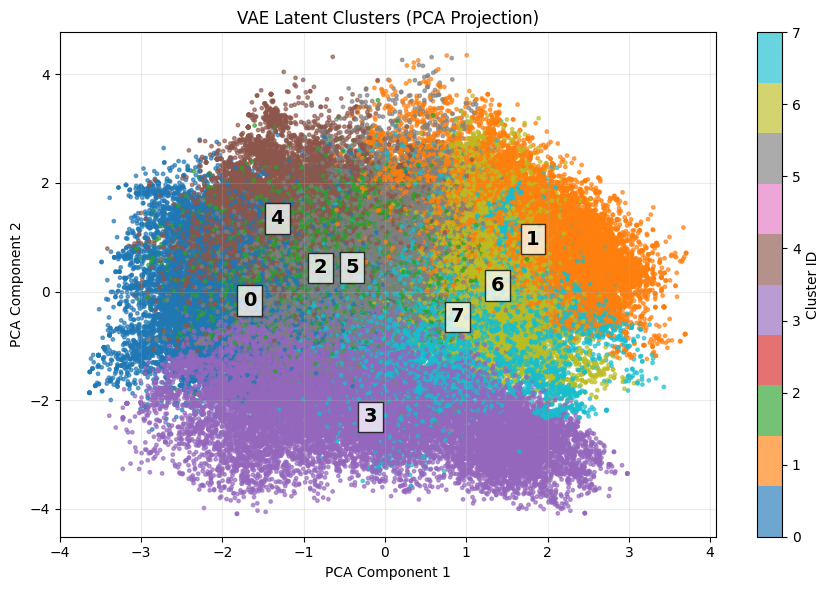
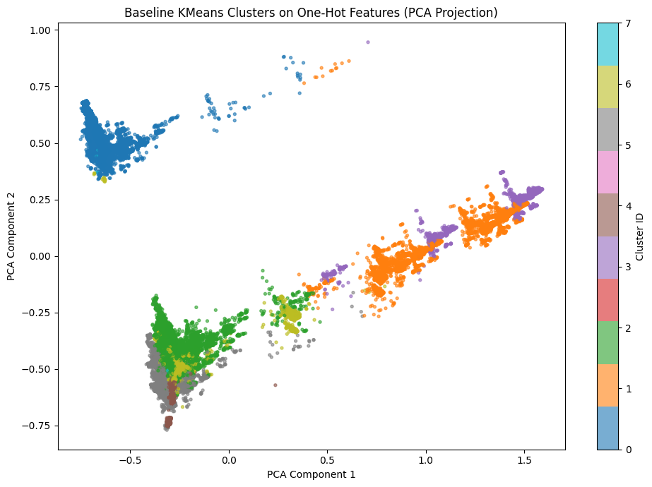

Preprocess OSHA Data
Loaded the OSHA CSV, selected relevant structured columns, handled missing values, cleaned binary fields, and grouped rare categories into Other.
Deep Learning • Unsupervised Learning • Workplace Safety
This project explores OSHA severe injury records using a deep learning based unsupervised pipeline. We compare an embedding-based Variational Autoencoder (VAE) against a traditional K-Means baseline to discover meaningful workplace injury patterns.
About the Project
Existing occupational injury analysis often focuses on high-level categories such as fractures, amputations, or hospitalizations. While useful, these labels do not fully explain the underlying workplace scenario that caused the injury.
This project asks whether a deep generative representation can uncover richer patterns by jointly learning from injury nature, body part, event, source, industry code, and severity indicators. The goal is to identify actionable scenarios such as ladder-related falls, machinery-induced amputations, forklift accidents, and heat/electrical exposure.
Methodology
The notebook follows a structured workflow from raw OSHA CSV preprocessing to latent-space clustering and baseline comparison.
Loaded the OSHA CSV, selected relevant structured columns, handled missing values, cleaned binary fields, and grouped rare categories into Other.
Each categorical feature was integer-encoded separately so that it could be passed through its own embedding layer.
The VAE embedded categorical fields, concatenated them with binary severity indicators, encoded them into latent mean and variance, and reconstructed the original structured record.
Clustering was performed on the latent mean vector, which is more stable than sampled latent vectors. K-Means was used as a baseline on raw encoded features.
Results
Instead of grouping only by injury outcome, the VAE clusters combine injury nature, event mechanism, source, and body part.
Cluster Visualization


Validation
Density-based clustering used to validate the natural number of clusters without pre-specifying k.
50,000 record subset | 8 clusters found | 0.1% noise points
| Cluster | Size | Event Type | Nature | Body Part | Hospitalized |
|---|
Model Comparison
The key difference is that VAE clusters represent workplace scenarios, while K-Means clusters mostly follow dominant labels.
VAE produces a more balanced cluster distribution, while K-Means is heavily skewed toward a few dominant groups.
| Cluster ID | VAE Size | VAE % | K-Means Size | K-Means % |
|---|
Examples of what the VAE captures compared with the closest K-Means interpretation.
| Cluster | VAE Pattern | VAE Characteristics | Closest K-Means | K-Means Interpretation | Key Difference |
|---|
Bonus: Supervised Validation
Using supervised learning to identify which features most strongly predict injury severity.
5-fold cross-validation | 103,750 records
| Rank | Feature | Importance |
|---|
Real-world Usefulness
These VAE-derived clusters enable organizations to move beyond generic injury statistics and identify specific real-world risk scenarios, such as ladder-related falls, machinery-induced amputations, or forklift accidents. This supports targeted training, inspections, policies, and prevention strategies that address the causes of workplace incidents rather than only their outcomes.
Conclusion
VAE clustering captures real-world injury scenarios by combining event, source, body part, and injury type.
K-Means primarily groups by dominant labels such as fractures or amputations, losing important context.
VAE-based clustering provides more meaningful, interpretable, and actionable insights for occupational safety analysis.